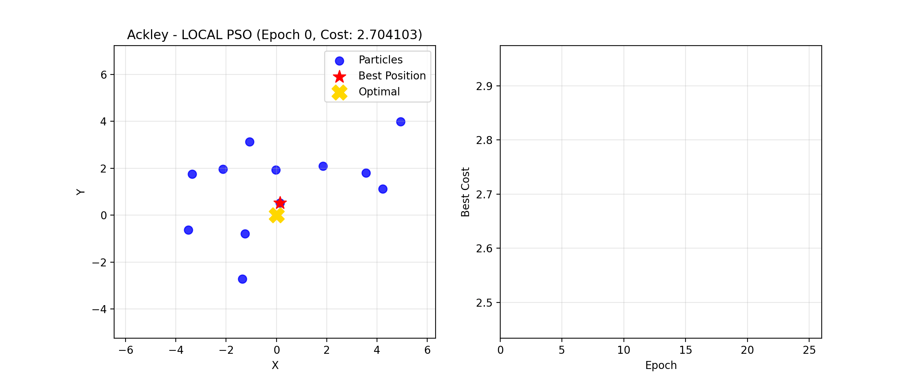
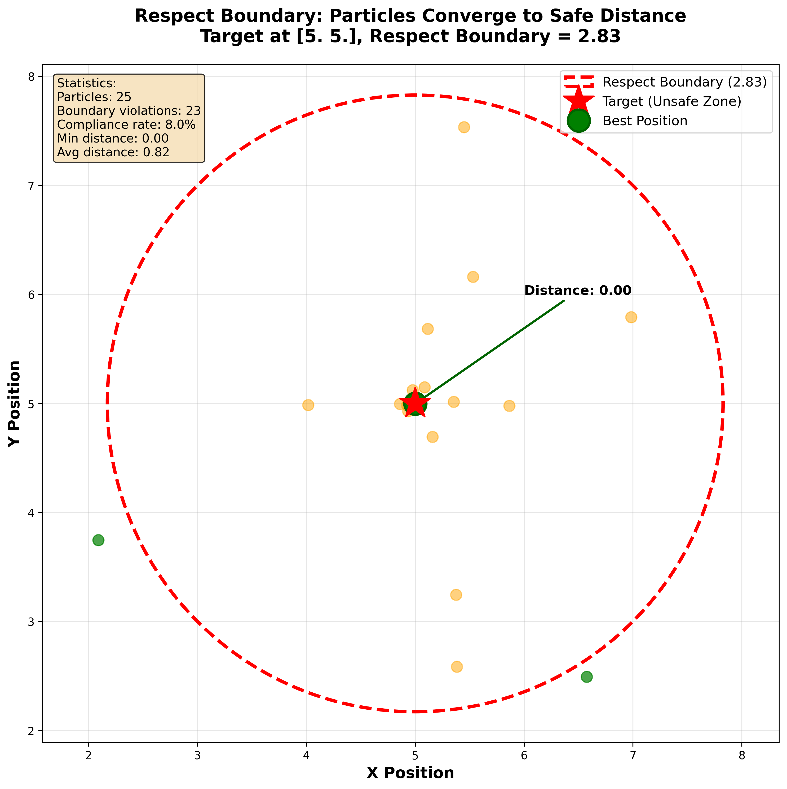
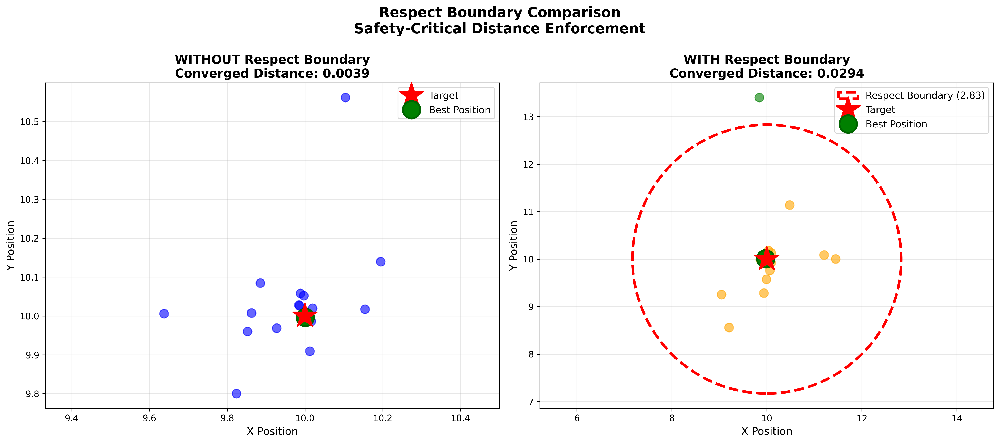

Sphere Function - Global PSO - Linear Inertia - Basic Clamping
Sphere Function - Global PSO - Adaptive Inertia - Hybrid Clamping
Rosenbrock Function - Global PSO - Exponential Inertia - Adaptive Clamping
Ackley Function - Local PSO - Chaotic Inertia - Exponential Clamping
Particles maintain safe distance from target
Demonstrates how particles converge to a safe "standoff distance" around the target rather than converging exactly on it. Essential for safety-critical applications.
Impact of respect boundary on convergence
Side-by-side comparison showing standard PSO convergence (left) versus respect boundary enforcement (right). Notice how particles stay outside the red boundary zone.
Safety-First Design: Automatically enforced when a target position is specified.
⚠️ Safety Notice: When you provide a target_position,
the respect boundary is automatically enabled and cannot be disabled. This prevents
particles from getting too close to potentially hazardous targets.
Usage:
swarm = Swarm(..., target_position=[x, y, z])
# Respect boundary automatically enforced!